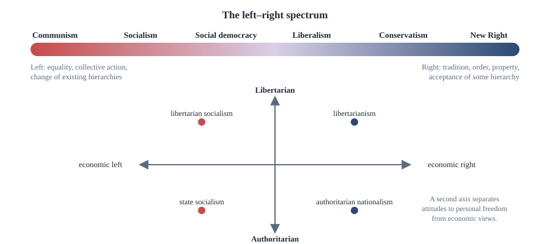
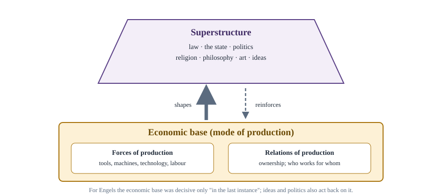

Chapter 11: Liberalism, Conservatism, Socialism and Marxism¶
The great ideologies of the modern age: their core ideas, varieties and critics
Learning outcomes
When you have finished this chapter you should be able to:
- define ideology and explain the origins and limits of the left–right spectrum;
- state the core values of liberalism and distinguish classical, social and neo-liberalism;
- state the core ideas of conservatism and distinguish traditional, one-nation and New Right conservatism;
- explain the main ideas of socialism and its varieties: utopian, Marxist, democratic socialist and social democratic;
- explain the key concepts of Marxism: historical materialism, class struggle, exploitation, alienation, the state and revolution;
- state the main criticisms of each ideology fairly.
11.1 What is an ideology?¶
An ideology is a more or less coherent set of ideas that provides a basis for organised political action. Most ideologies contain three elements:
- a description of the existing order, its problems and their causes;
- a vision of a better society;
- a programme for getting from one to the other.
The word was coined in the 1790s by the French philosopher Antoine Destutt de Tracy, who meant by it a "science of ideas". Marx and Engels gave it a critical meaning: ideology is the set of ideas that serves the interests of the ruling class while presenting them as universal truths, producing what later Marxists called false consciousness. Others have used the word for any closed, dogmatic system of thought, contrasted with pragmatic, open-minded politics. Most political scientists now use it in a neutral sense: every political outlook is an ideology, and the study of ideologies examines how they combine concepts such as liberty, equality and community. The political theorist Michael Freeden described ideologies as distinctive arrangements of political concepts, each giving priority to some and interpreting all of them in its own way.
Left and right¶
The terms "left" and "right" come from the seating of the French National Assembly in 1789: supporters of the king sat on the president's right, supporters of revolution on his left. Today the spectrum is often described like this:

The single line is a crude simplification. It mixes economic questions (how much should the state redistribute?) with social questions (how much should it enforce traditional values?), and some ideologies, such as anarchism, environmentalism and feminism, do not fit on it at all. Many political scientists add a second axis from libertarian (maximising personal freedom) to authoritarian (emphasising order and authority). Totalitarian regimes of the far left and far right resembled each other in their authoritarianism while differing in economic doctrine.
11.2 Liberalism¶
Liberalism is the ideology of the modern West and has spread far beyond it. It emerged in the seventeenth and eighteenth centuries in opposition to absolute monarchy, feudal privilege and religious intolerance.
Core values¶
- The individual. Society consists of individuals, each of equal moral worth, each with his or her own interests and conception of the good. Liberals are suspicious of claims that a community, class or nation has interests superior to those of its members.
- Liberty. Individuals should be as free as possible, consistent with a like freedom for others. Liberals differ on whether liberty is mainly negative or also positive (Chapter 4).
- Reason. Human beings are rational and capable of running their own lives. Liberals have faith in progress through reason, debate and education.
- Equality. Liberals believe in legal and political equality and in equality of opportunity; most do not seek equality of outcome.
- Toleration and pluralism. A free society contains many beliefs and ways of life, which should be tolerated (Chapter 10).
- Consent and constitutionalism. Government rests on the consent of the governed and should be limited by a constitution, the rule of law, the separation of powers and protected rights.
Classical liberalism¶
Classical liberalism, dominant in the eighteenth and nineteenth centuries, saw the state as a necessary evil to be kept small. Locke defended natural rights to life, liberty and property; Adam Smith, in The Wealth of Nations (1776), argued that free markets, guided as if by an "invisible hand", tend to promote general prosperity better than state regulation; utilitarians such as Bentham supported free trade and limited government. Classical liberals favoured free trade, free markets, minimal taxation and a state confined to defence, order and a few public works.
Social (modern) liberalism¶
By the late nineteenth century industrial capitalism had produced great wealth alongside poverty, slums and insecurity. Social liberals argued that freedom requires more than the absence of interference. T. H. Green defended positive freedom (Chapter 4); L. T. Hobhouse (Liberalism, 1911) argued that the state should secure the conditions for each person's self-development. The economist J. M. Keynes argued in The General Theory of Employment, Interest and Money (1936) that governments could and should manage overall demand to prevent mass unemployment, and William Beveridge's report of 1942 laid the plans for the British welfare state. Social liberalism supported progressive taxation, social insurance, public education and health care, and regulation of markets. Rawls's theory of justice (Chapter 6) is a philosophical statement of this tradition.
Neo-liberalism¶
From the 1970s, faced with economic problems in many welfare states, neo-liberals revived classical liberal ideas. Friedrich Hayek (The Road to Serfdom, 1944) argued that central economic planning threatens freedom and that markets coordinate dispersed knowledge better than any planner; Milton Friedman (Capitalism and Freedom, 1962) argued that economic freedom is a condition of political freedom. Neo-liberal policies included privatisation, deregulation, lower taxes, control of inflation and reduced welfare spending. Libertarians such as Nozick (Chapter 6) took the argument further.
Criticisms of liberalism¶
- Conservatives argue that liberalism's abstract individualism and faith in reason neglect tradition, community and human imperfection.
- Socialists and Marxists argue that liberal freedoms are formal and that liberalism defends capitalist inequality.
- Communitarians criticise the "unencumbered self" (Chapter 6).
- Feminists argue that liberalism's division between public and private has shielded injustice within the family (Chapter 12).
- Critics from postcolonial perspectives note that leading liberals, including Locke and Mill, justified colonial rule, and ask whether liberal universalism has been tied to Western domination.
11.3 Conservatism¶
Conservatism arose as a reaction to the French Revolution and to the rationalism of the Enlightenment. Its founding text is Edmund Burke's Reflections on the Revolution in France (1790).
Core ideas¶
- Tradition. Institutions and customs that have survived for generations embody accumulated wisdom, tested by experience, that no individual reason could reproduce. Burke described society as a partnership not only among the living, but between those who are living, those who are dead and those who are to be born.
- Human imperfection. Human beings are limited in their reason and morally fallible. Grand schemes to remake society by abstract principles are likely to fail and to cause great harm.
- Pragmatism and gradual change. Conservatives are not opposed to all change; Burke wrote that a state without the means of some change is without the means of its conservation. But change should be gradual, organic and responsive to circumstances, like the repair of an old building rather than its demolition.
- Organic society. Society is like a living organism, not a machine assembled by individuals. Institutions such as the family, the church, local communities and voluntary associations (Burke's "little platoons") bind people together.
- Authority and hierarchy. Social order requires authority, and some hierarchy is natural and beneficial. Traditional conservatives believed in leadership by those with experience and responsibility.
- Property. Property gives people security, a stake in society and a link between generations.
Varieties¶
- Traditional or paternalistic conservatism emphasises duty, hierarchy and social responsibility. One-nation conservatism, associated with the nineteenth-century British prime minister Benjamin Disraeli, held that the privileged have obligations to the less fortunate, and accepted social reform to prevent society splitting into "two nations", rich and poor.
- Philosophical conservatism: the English philosopher Michael Oakeshott (Rationalism in Politics, 1962) criticised "rationalism" in politics, the belief that politics can be guided by abstract technical knowledge, and defended practical knowledge gained from experience. The conservative disposition, he suggested, is a preference for what is present, familiar and tested over what is merely possible and untested.
- The New Right, influential from the 1970s, combined two strands that sit uneasily together: neo-liberal economics (free markets, a smaller state) and neo-conservative social policy (strong government, law and order, traditional morality, national identity).
Criticisms of conservatism¶
- Defence of privilege. Critics argue that conservatism has often been a defence of the interests of those who benefit from existing hierarchies, and that "tradition" has included slavery, caste and the subordination of women.
- Vagueness. If conservatism means preserving what exists, it seems to have no content of its own and to defend whatever happens to be established.
- Internal tension. The New Right's free-market economics can undermine the communities and traditions that its social conservatism wants to protect.
Conservatives reply that their ideology is a disposition, not a blueprint, and that its value lies precisely in its scepticism about blueprints. They point to the destruction caused by twentieth-century attempts to remake society from scratch.
11.4 Socialism¶
Socialism emerged in the early nineteenth century in reaction to industrial capitalism. It is a broad family of ideologies sharing a set of values.
Core values¶
- Community and cooperation. Human beings are social creatures, shaped by society, and capable of cooperating for the common good. Competition and individualism set people against one another.
- Equality. Socialists favour social and economic equality, not only legal and political equality. Inequality reflects unequal social conditions more than unequal talents.
- Need. Goods should be distributed at least partly according to need.
- Class. Society is divided into classes based on economic position, and politics is shaped by conflict between them.
- Common ownership. Many socialists have favoured collective ownership of productive resources, by the state, cooperatives or communities, in place of private ownership.
Utopian socialism¶
The early socialists, later called utopian by Marx and Engels, believed that a cooperative society could be created by example and persuasion. Robert Owen set up model factory communities in Scotland and the United States; Charles Fourier proposed cooperative communities called phalanxes; Henri de Saint-Simon envisaged a society organised by scientists and industrialists for the benefit of the poorest.
Democratic socialism and social democracy¶
In the late nineteenth century many socialists came to believe that socialism could be achieved gradually through elections and reform rather than revolution. Eduard Bernstein, a German Social Democrat, argued in Evolutionary Socialism (1899) that capitalism was not collapsing as Marx predicted, that workers' conditions were improving, and that socialism should be pursued by democratic reform; this was called revisionism. In Britain the Fabian Society (founded 1884), including Sidney and Beatrice Webb and George Bernard Shaw, advocated the gradual extension of public ownership and welfare.
Over the twentieth century much of the democratic left moved from seeking to replace capitalism to seeking to reform it. Social democracy accepts a market economy but aims to make it fairer through a mixed economy, progressive taxation, a comprehensive welfare state, strong trade unions and economic management. The welfare states of the Scandinavian countries are often cited as examples. In the 1990s some centre-left parties adopted what was called the "Third Way", which sought to combine market efficiency with social justice; critics on the left saw this as an accommodation with neo-liberalism.
Criticisms of socialism¶
- Economic calculation. The economists Ludwig von Mises and Hayek argued that without market prices a central planner cannot know the relative scarcity of goods and so cannot allocate resources efficiently.
- Incentives. Common ownership and equal rewards may weaken incentives to work, save and innovate.
- Freedom. Concentrating economic power in the state threatens political freedom (Hayek's Road to Serfdom).
- Historical experience. Critics point to the economic failures and political repression of states that abolished private ownership in the name of socialism. Democratic socialists reply that these were authoritarian distortions, not democratic socialism.
11.5 Marxism¶
Marxism is the body of thought developed by Karl Marx (1818–1883) and Friedrich Engels (1820–1895), and elaborated by many later thinkers. It is both a theory of history and society and a programme for revolution. Its main works include the Communist Manifesto (1848) and Marx's Capital (volume 1, 1867).
Historical materialism¶
Marx's theory of history is called historical materialism (Engels's term was the "materialist conception of history"). Its central claim is that the way people produce the material means of life shapes the rest of society.
- The forces of production are the means by which people produce: tools, machines, technology, raw materials and human labour power.
- The relations of production are the social relations in production, above all relations of ownership: who owns the means of production and who must work for the owners.
- Together they form the economic base (or mode of production). On the base rises a superstructure of law, politics, religion, art and philosophy, which broadly reflects and supports the base.
History, on this view, moves through a series of modes of production: primitive communism, ancient slavery, feudalism and capitalism, with socialism and communism expected to follow. Change occurs when the developing forces of production come into conflict with existing relations of production, which become fetters on further development; an era of social revolution follows.

Class struggle¶
"The history of all hitherto existing society is the history of class struggles," the Communist Manifesto begins. In each mode of production one class owns the means of production and another does not: masters and slaves, lords and serfs, capitalists (the bourgeoisie) and wage-workers (the proletariat). Under capitalism, society tends to split into these two great classes.
Exploitation and surplus value¶
Marx argued that capitalism is exploitative even when workers are paid the full market value of their labour power. Workers sell their labour power (their capacity to work) for a wage that equals the cost of maintaining them. But in a working day they produce more value than this. The difference, surplus value, is appropriated by the capitalist as profit. Exploitation is thus built into the wage relation itself, not a matter of unusually low wages.
Worked example 11.1: Surplus value in a simple model
Situation. In Marx's labour theory of value, suppose a worker works a 10-hour day. The goods needed to maintain the worker for a day take 6 hours of social labour to produce, so the day's wage is equivalent to 6 hours of value.
Analysis. In the first 6 hours (necessary labour) the worker produces value equal to the wage. In the remaining 4 hours (surplus labour) the worker produces surplus value that goes to the capitalist. Marx's rate of surplus value (or rate of exploitation) is surplus labour divided by necessary labour:
The capitalist can raise it by lengthening the working day (absolute surplus value) or by raising productivity so that the wage goods take less time to produce (relative surplus value). Critics reject the labour theory of value on which this analysis rests (see below); most modern economists explain prices by supply, demand and marginal productivity instead.
Alienation¶
In his early writings, especially the Economic and Philosophic Manuscripts of 1844, Marx described workers under capitalism as alienated (estranged) in four ways: from the product of their labour, which belongs to another and confronts them as an alien power; from the activity of labour, which is forced and not an expression of themselves; from their species-being, their distinctively human capacity for free, creative, conscious activity; and from other people, who confront them as competitors or exploiters.
The state, revolution and communism¶
For Marx the state in class society is an instrument of class rule (Chapter 2). Capitalism, he predicted, would be undermined by its own contradictions: competition would concentrate capital in fewer hands, crises would recur, and the proletariat, growing in numbers and organisation, would become conscious of itself as a class and overthrow the bourgeoisie. After the revolution a transitional period, which Marx called the dictatorship of the proletariat, would abolish private ownership of the means of production. Eventually, with classes abolished, the state as an instrument of coercion would wither away, and a communist society would emerge, governed by the principle that Marx stated in his Critique of the Gotha Programme (1875): "From each according to his ability, to each according to his needs!"
Later Marxism¶
- Lenin argued that a disciplined vanguard party of professional revolutionaries must lead the working class, and that imperialism was the highest stage of capitalism. After the Russian Revolution of 1917, the Soviet state under Lenin and later Stalin became a one-party dictatorship.
- Western Marxists such as Gramsci (hegemony, Chapter 3), and the Frankfurt School (Theodor Adorno, Max Horkheimer, Herbert Marcuse) turned attention to culture, ideology and the ways capitalism secures consent.
- Mao Zedong adapted Marxism to a largely peasant society, making the peasantry a revolutionary force.
- Analytical Marxists such as G. A. Cohen reconstructed Marx's ideas with the tools of analytical philosophy, and in later work turned to the moral case for equality.
Criticisms of Marxism¶
- Failed predictions. Capitalism did not collapse in the most advanced countries; workers' living standards rose; revolutions occurred instead in largely agrarian societies. Classes became more complex, with a large middle class.
- The labour theory of value is rejected by most economists.
- Economic determinism. Critics argue that Marx underestimated the independent role of ideas, religion, nationalism and politics. (Engels himself insisted that the economic factor was decisive only "in the last instance".)
- Authoritarianism. States governed by Marxist-Leninist parties in the twentieth century suppressed political freedom, and some caused mass deaths through repression and famine. Critics argue that the idea of a dictatorship of the proletariat and a vanguard party invited this; defenders argue that it betrayed Marx's democratic and humanist aims.
- Neglect of other forms of oppression. Feminists and others argue that class is not the only or always the most important form of domination (Chapter 12).
Defenders reply that Marx's analysis of capitalism's tendency to concentrate wealth, generate crises and commodify human life remains illuminating, and that his critique of alienation and exploitation raises questions any theory of justice must answer.
| Liberalism | Conservatism | Socialism | Marxism | |
|---|---|---|---|---|
| Human nature | Rational, self-interested individuals | Imperfect, limited in reason, social | Social, cooperative | Shaped by social and economic conditions |
| Key value | Liberty | Order and tradition | Equality and community | Human emancipation |
| View of the state | Necessary, but limited (classical) or enabling (social) | Source of order and authority | Instrument for social reform (democratic socialism) | Instrument of class rule; to wither away |
| Economy | Market economy, with more or less regulation | Private property; varies from paternalistic to free-market | Mixed or collectively owned | Common ownership; communism |
| Change | Reform through reason and debate | Gradual and organic | Reform or revolution | Revolution |
Table 11.1. Four ideologies compared.
Key idea
Liberalism puts the free individual first, conservatism the wisdom of tradition and the limits of reason, socialism equality and community, and Marxism the abolition of class exploitation through a transformation of the economic base.
Summary
- An ideology combines a description of society, a vision of a better one and a programme for change. The left–right spectrum originated in 1789 and is a crude simplification; a second libertarian–authoritarian axis helps.
- Liberalism values the individual, liberty, reason, equality, toleration and consent. Classical liberals (Locke, Smith) favour a limited state; social liberals (Green, Hobhouse, Keynes) an enabling welfare state; neo-liberals (Hayek, Friedman) a return to markets.
- Conservatism (Burke, Oakeshott) values tradition, organic society, gradual change, authority and property, and is sceptical of abstract reason; varieties include one-nation conservatism and the New Right.
- Socialism values community, equality, need and common ownership; its varieties include utopian socialism, revisionism (Bernstein), Fabianism and social democracy; it is criticised on grounds of calculation, incentives and freedom.
- Marxism explains history by the base (forces and relations of production) and class struggle; capitalism exploits workers through surplus value and alienates them; revolution and a transitional dictatorship of the proletariat would lead to classless communism. Its predictions, economics and political record have been heavily criticised.
11.6 Exercises¶
Exercise 1
Give the three elements of an ideology and explain why the left–right spectrum is a simplification.
Answer
An ideology offers (1) a description of the existing order, (2) a vision of a better society and (3) a programme of action. The left–right line is a simplification because it merges economic questions (redistribution, ownership) with social questions (tradition, personal freedom), and cannot place ideologies such as anarchism, feminism or environmentalism; a second libertarian–authoritarian axis is often added.
Exercise 2
Distinguish classical from social liberalism on (a) the meaning of freedom and (b) the role of the state.
Answer
(a) Classical liberals understand freedom mainly as negative liberty, the absence of interference; social liberals add a positive conception, the real capacity to develop oneself. (b) Classical liberals favour a minimal state limited to order, defence and contracts; social liberals favour an enabling state that provides education, health care, social insurance and economic management.
Exercise 3
Explain Burke's view of society as a partnership across generations, and what it implies for political change.
Answer
Burke saw society as a partnership not only among the living but between the dead, the living and those yet to be born. Present generations inherit institutions embodying accumulated wisdom and hold them in trust for the future. Change should therefore be gradual and organic, repairing rather than demolishing, and abstract schemes that tear up inherited institutions are both arrogant and dangerous.
Exercise 4
What was Bernstein's revisionism, and how does social democracy differ from Marxism?
Answer
Bernstein argued (1899) that capitalism was not collapsing, workers' conditions were improving, and socialism should be pursued through democratic reform, not revolution. Social democracy accepts a market economy and seeks to make it fair through a mixed economy, welfare and progressive taxation, while Marxism seeks to abolish capitalism and private ownership of the means of production, by revolution.
Exercise 5
In Marx's terms, a worker works 8 hours; the value of the wage is produced in 5 hours. Calculate the surplus labour and the rate of surplus value.
Answer
Surplus labour = 8 − 5 = 3 hours. Rate of surplus value = surplus labour ÷ necessary labour = 3 ÷ 5 = 0.6, or 60 per cent.
Exercise 6
Name the four forms of alienation Marx described in 1844.
Answer
Alienation from (1) the product of labour, (2) the activity of labour, (3) species-being (human creative nature) and (4) other people.
Exercise 7
Give three criticisms of Marxism and one reply a Marxist might make.
Answer
Any three: (1) failed predictions (no collapse of advanced capitalism; rising living standards; revolutions in agrarian countries); (2) the labour theory of value is rejected by most economists; (3) economic determinism underrates ideas, religion and nationalism; (4) Marxist-Leninist states were authoritarian and repressive; (5) neglect of non-class oppression. Reply: Marx's analysis of capitalism's tendencies to concentrate wealth, generate crises and commodify life remains illuminating, and twentieth-century dictatorships betrayed rather than fulfilled his emancipatory aims.
11.7 Quiz¶
Check yourself: liberalism, conservatism, socialism and Marxism
Exercise 1
The terms "left" and "right" come from the seating of which assembly?
- The English Parliament of 1688
- The French National Assembly of 1789
- The American Congress of 1789
- The Frankfurt Parliament of 1848
Answer
The French National Assembly of 1789
Exercise 2
Match each thinker with a work.
| A | B |
|---|---|
| Burke | The Wealth of Nations |
| Hayek | Evolutionary Socialism |
| Adam Smith | Reflections on the Revolution in France |
| Bernstein | The Road to Serfdom |
Answer
Burke — Reflections on the Revolution in France; Hayek — The Road to Serfdom; Adam Smith — The Wealth of Nations; Bernstein — Evolutionary Socialism
Exercise 3
Which strand of liberalism supported a welfare state and positive freedom?
- Classical liberalism
- Social liberalism
- Neo-liberalism
- Libertarianism
Answer
Social liberalism
Exercise 4
In Marx's theory, the forces and relations of production together form the
- superstructure
- base
- vanguard
- state
Answer
base
Exercise 5
What did Marx call the value produced by workers beyond the value of their wages? (two words)
Answer
surplus value
Exercise 6
Which conservative thinker criticised "rationalism in politics"?
- Disraeli
- Oakeshott
- Hobhouse
- Keynes
Answer
Oakeshott
Exercise 7
'From each according to his ability, to each according to his needs' comes from which work by Marx?
- Communist Manifesto
- Capital
- Critique of the Gotha Programme
- On the Jewish Question
Answer
Critique of the Gotha Programme